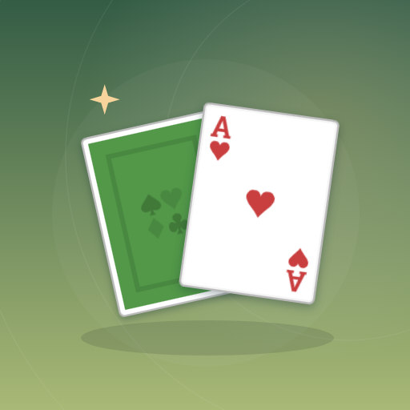

<- all projects

Solitaire Trails
PC
Volume
Live
TriPeaks solitaire on a countryside trail. One higher, one lower.
Solitaire Trails is a TriPeaks solitaire game with a countryside campaign. Play a card one higher or lower than your trail pile, clear the peaks and stretch your deck with well-planned streaks. Three landscapes bring three card formations: three classic peaks, four branching ridges or seven card paths. Every deal has a winning path, with no timer, free retries, three undos every hand and wild cards earned through campaign wins. Earn stars for long streaks and fewer helpers, follow a daily trail, keep a journal of every route and build a small homestead between hands.